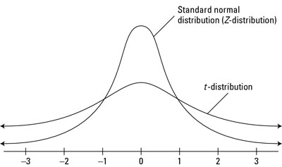

T 检验和卡方检验的区别？
谈论假设检验离不开场景，同一个分布往往有多个应用场景。举个例子，测试平均值或转化率会用到 \(T\) 检验，测试最小二乘法回归的系数时用的也是 \(T\) 检验，前者是基于中心极限定理，而后者则基于最小二乘法的正态假设。而卡方检验的应用范围就更加广阔了。但抛开场景，检验的本质都是围绕参数构造一个统计量，这个统计量在某些条件下具有渐进的某种分布，从而给我们提供一个可量化的拒绝域。
例子：转化率
举一个简单例子：检验一个新方案带来的下单转化人数的变化。这个检验既可以用 \(T\) 来做，也可以用卡方检验来做。我们先从 \(T\) 说起。\(T\) 检验是一个平均值的检验，我们知道，转化率本质上是一个平均值。假设我们现在把新方案投入了测试，转化率由 \(0.1\) 上升到 \(0.2\)，我们想知道这个提升是否显著，可以构建如下假设：
\[H_0: \bar{x} = 0.1 \qquad H_1: \bar{x} > 0.1\]
\(\bar{x}\) 即转化率，它服从一个 \(T\) 分布。为什么是 \(T\) 分布呢？先看看它的分布：假如我们一共为新方案测试了 \(100\) 个用户，其中有 \(20\) 个选择了下单，另外 \(80\) 个则没有下单，那么这 \(100\) 个人的行为可以看成是一个由 \(100\) 个变量组成的向量：
\(1\) 表示下单，\(0\) 则没有，因此这个向量里有 \(20\) 个 \(1\)，\(80\) 个 \(0\). 每一个变量都代表一个人，每一个人都服从一个非 \(0\) 即 \(1\) 的分布——伯努利分布： \(Bernoulli(p_i )\). 括号里的 \(p_i\) 是伯努利分布的参数，表示 \(x_i=1\) 的概率，即一个人下单的概率。为了简化模型，我们现在假设这 \(100\) 个人相互独立，互不影响，且每一个人下单的概率 \(p_i\) 相同（独立同分布）:
\[X_i \stackrel{iid}{\sim} Bernoulli(p)\qquad i=1,2,…,100\]
基于独立同分布的假设，我们观测到的转化率（平均值）\(\bar{x}\) 的期望值就是 \(p\). 通过中心极限定理：
\[Y=\sqrt{n}(\bar{x}-p)\stackrel{D}{\rightarrow}N(0, p(1−p))\]
可以得到一个正态分布，期望值为 \(0\)，方差为 \(p(1-p)\). 看起来我们可以直接用这个正态分布做 \(z\) 检验，在 \(H_0\) 为真的条件下，\(Z\) 检验量等于：
\[Z = \frac{Y−μ}{\sigma/\sqrt{n}}=\frac{\sqrt{n}(\bar{x}-0.1)-0}{\sqrt{p(1-p)/n}}\sim N(0, 1) \qquad\]
问题来了，方差 \(p(1-p)\) 等于多少呢，要让他等于 \(0.1(1-0.1)\) 吗？可以，但没必要，因为 \(0.1\) 只是一个假设，与我们的观测数据并无关系，用它来做方差，则信息得不到有效的利用。实际上， \(\sigma^2=p(1-p)\) 应该被看成是一个未知数。未知的意思是：不清楚它的真实值等于多少。原因在于我们所抽取的是部分样本，不能代表总体。而但我们又不得不使用数据 \(X\)，做到信息利用最大化。于是 \(T\) 检验给出了解决方案：使用样本方差 \(\hat{σ}^{2}=\sum(x_i−\bar{x})^2/(n-1)\) 来替代总体方差 \(\sigma^2=p(1-p)\). 此时检验量不再符合正态分布，而是符合 \(T\) 分布。
T 检验
单样本 \(T\) 检验
接上。给定一个方差不为 0 的正态分布 \(Z∼Normal(μ, σ^2 )\)，当我们使用样本方差 \(\hat{σ}^{2}\) 来替代 \(\sigma^2\) 后，可以构建出如下 \(T\) 检验量：
\[T = \frac{Z−μ}{\hat{\sigma}}\sim T_{n-1}\]
结合上文中的 \(Z\) 统计量，我们可以得到 \(H_0\) 为真时，转化率对应的 \(T\) 检验量是：
\[T = \frac{\sqrt{n}(\bar{x}-\mu_0)-0}{\hat{\sigma}}=\frac{\bar{x}-\mu_0}{\hat{\sigma}/\sqrt{n}} \sim T_{n-1},\quad \hat{\sigma}^2=\frac{\sum(x_i−\bar{x})^2}{n-1}\]
\(n\) 越大时，\(T\) 分布的自由度越高，它和正态分布就会越像，\(T\) 检验无限接近于 \(z\) 检验。这个渐进趋势从直觉上很好理解：样本量增大时，样本池子和总体池子肯定是愈发相近的。理论上当样本数大于 \(50\) 时，\(T\) 检验和 \(z\) 检验的区别就已经非常微小了。这个样本量在互联网领域是很容易达到的，不过由于一些惯性，大家一般都还是采用 \(T\) 而非 \(z\) 来做假设检验。
双样本 \(T\) 检验
上述 \(T\) 检验也叫单样本 \(T\) 检验，是对比转化率和某个固定值。如果我们想要对比两个不同组 \(x\), \(y\) 的不同均值 \(\bar{x}\) 和 \(\bar{y}\)，则可以使用如下检验量，它假设两组均值不同，但样本方差相近：
\[T=\frac{\bar{x}-\bar{y}}{s_{pooled}\sqrt{1/n+1/m}}∼T_(n+m−2),\quad s_{pooled}^2=\frac{\sum(x_i−\bar{x})^2+\sum(y_i−\bar{y})^2}{n+m−2}\]
有时候样本方差并不相近。这个时候可以使用 Welch's t-test，就是在分母处做一些改动，就不打公式了（懒。
卡方检验
这里我们讨论两个卡方检验常见的场景：第一种是基于 contingency table（列联表）的 Pearson's chi-sqaure test，大部分文章里的卡方检验指的都是它。第二种 likelihood-ratio chi-sqaure test（似然比卡方检验），由于似然比检验这个名字比较好听，所以大家就不怎么管他叫卡方检验，但它也用到了卡方分布。
Pearson's Chi-square Test
Pearson's chi-square test 可用来对某个列联表里的数据做检验。这个表可以是各种形式，不同用途，只要它包含变量在某个组/某个区间内的样本频数。可以看几个例子:
(1) 判断观测到的下单人数是否和原本的下单人数\(（100*0.1 = 10）\)一致，和我们上文中的 \(T\) 检验应用场景一样。
| 新方案 | 以前 | |
|---|---|---|
| 下单人数 | 20 | 10 |
| 未下单人数 | 80 | 90 |
\[\space\]
(2) 判断性别和家暴这两个变量是否相互独立。
| 家暴 | 不家暴 | |
|---|---|---|
| 男 | 8 | 92 |
| 女 | 1 | 99 |
\[\space\]
(3) 判断观测到的数据是否符合标准正态分布（不正经的goodness-of-fit test）。
| 变量区间 | 数据的频数 | 标准正态的理论频数 |
|---|---|---|
| \(-\infty \sim -2\) | 20 | 2 |
| \(-2 \sim 0\) | 30 | 48 |
| \(0 \sim 2\) | 30 | 48 |
| \(2 \sim \infty\) | 20 | 2 |
\[\space\]
可以看到这些表虽然各不相同，但他们的形式都类似，都是检验两列（或多列）之间是否相似。它们有一个统一的 \(\chi^2\) 检验量：
\[\chi^2=\sum_{i=1}^k\frac{(O_i-E_i)^2}{E_i}\sim \chi^2_{\nu}\]
\(O_i\) 是第 \(i\) 个观测值，\(E_i\) 是第 \(i\) 个观测值对应的理论值（或期望值），由于我们三个表都只有两列，第一列就是观测值，因此第几个 \(i\) 就表示第几行。而自由度 \(\nu\) 等于 \(H_A\) 中自由参数的数量减去 \(H_0\) 中自由参数的数量，一般可直接套用公式 \(\nu=(\# rows-1)(\#cols-1)\) 来计算。
\(T\) 检验和卡方检验对比
那么什么时候用卡方检验呢？对于下单转化的例子，\(T\) 检验和卡方检验（第一张表）都适用，它们有什么区别？
-
从方法本身来说，\(T\) 检验是参数检验——我们假设样本是独立同分布的伯努利变量，也就是说假设数据有正态形状；而 Pearson's chi-square test 是非参检验——尽管用到了卡方分布来制定检验量，但我们并不假设数据本身有特定分布。参数检验比非参检验更依赖数据自身的规律；
-
如果数据的确有正态形状，用 \(T\) 检验会更好；而如果数据不具有正态形状，则 \(T\) 检验不一定比卡方检验更好；
-
\(T\) 检验和卡方检验的侧重点略有不同。同样对比 A/B 两个方案下的下单人数， \(T\) 检验要回答的问题是，两个方案下的平均值（下单转化率）是否有显著区别；而卡方检验要回答的问题是，下单行为是否独立于方案的变化。它关注的是不同方案下转化人数的频数分布是否有区别；
-
\(T\) 检验一般只适用于对比一个组或两个组之间的效果。而卡方检验（以及 \(F\) 检验）则可以用于对比三个及以上的组（版本 A/B/C）；
-
样本量小很时，\(\chi^2\) 表现不好（它只有在大样本时才渐进于卡方分布）。作为替代，可以用 Fisher's exact test；
-
\(T\) 和 \(\chi^2\) 检验有一个共同的假设：样本之间相互独立。在某些场景下这个假设并不成立。比如打车软件要对派单系统做测试，他们会发现司机之间存在竞争关系，并不相互独立。
Likelihood Ratio Chi-square Test
经典的似然比检验也使用到了卡方检验量，因此在这里我也把它作为卡方检验的一种来讨论。回顾我们在 \(T\) 检验中做的两个假设：
\[H_0: p=0.1 \qquad H_1: p>0.1 \qquad \sigma^2 未知\]
我们用 \(\theta\) 表示参数，\(\theta\) 包括 \(p\) 和 \(\sigma^2\)，对应的参数空间分别为 \(\Theta_0=\{0.1\}\times (0, +\infty)\) 和 \(\Theta_1=(0.1, +\infty)\times (0, +\infty)\). 和 \(T\) 检验不同的是，LRT 可以同时检验 \(\theta\) 里的所有参数，\(X\) 也并不限定在正态分布，因此它的适用范围比 \(T\) 和 Pearson's Chi-square 更广。LRT 检验量具体如下：
\[\mathcal{L} = \frac{f(x|\hat{\theta}_1)}{f(x|\hat{\theta}_0)}\]
\[\chi^2 = 2 log(\mathcal{L})\rightarrow \chi^2_{\nu}, \quad \nu=dim(\Theta_1)-dim(\Theta_0)\]
\(\hat{\theta}_0\) 和 \(\hat{\theta}_1\) 分别是 \(\theta\) 在 \(\Theta_0\) 和 \(\Theta_1\) 中的“最优”估计值，即 MLE. 自由度 \(\nu = 2-1 = 1\). \(f(x|\theta)\) 则是一个概率：如果以 \(\theta\) 作为参数构建模型，我们观测到数据 \(X\) 的理论概率是多少？概率越大，意味着模型和当前数据越吻合。\(\mathcal{L}\) 是二者概率的比值，2 倍的 log 它趋近于卡方分布。所以如果 \(\mathcal{L}\) 和 \(log(\mathcal{L})\) 很大，那么\(\hat{\theta}_1\) 比 \(\hat{\theta}_0\) 更符合真实观测，我们就有更大的把握去拒绝 \(H_0\).
LRT 适用场景
-
上文提到过，LRT 并不要求数据服从于正态分布，也不要求样本之间一定相互独立。不过它也并不像 Pearson's chi-square 那样完全不依赖于分布。它要求 \(X\) 有一个总体的 pmf 或者 pdf，并且我们可以写出两个 likelihood 之间的比值 \(\frac{f_1(x)}{f_2(x)}\)；
-
LRT 可以对不止一个参数，或者参数的取值范围不止一个点的情况做检验，因此它适合用来检测更复杂的假设和模型。什么时候需要更复杂的模型？一是看数据是否正态分布，二是看除平均值以外是否还有其它指标。比如在生活中有各种各样的右偏分布（或者说长尾分布）：人的收入、传染病的发病、基因的表达等等，它们有偏度是因为样本并非独立同分布。因此中心极限定理并不适用，他们的平均值，平均收入、发病率、基因表达平均水平这些，并不一定趋于正态，此时再做 \(T\) 检验就不太合适了。替代方案可以是用泊松分布、负二项分布等去结合 LRT 检验。又比如我们想要估计均值和方差的组合，这时单一的 \(T\) 检验也不能满足我们的需求；
-
对于简单的情形，比如我们的转化率例子，使用正态分布的 LRT 和 \(T\) 检验本质上是一致的，只是给出的 P 值会略有不同。相比之下， LRT 的优势在于：理论上它有更强的 Power，而 \(T\) 检验的优势有两点，一个是在数据具有正态形状时它表现更优异，在小样本上也有效力；另一个优势在于它普及很广，学习成本比较低。
总结
\(T\) 检验适用于在样本独立同分布的假设下，对均值做检验；Pearson 卡方检验适用于在不确定样本分布的情况下，来对比数据的频数分布；似然比检验则可以覆盖更多的场景，有更大的 Power，只是它更复杂一些，需要我们对数据的分布做出假设，还要计算 MLE.
选择什么分布去做检验，似乎不那么重要。毕竟互联网并不像学术实验，不会过分追求严谨，所用数据也够大、够准确，因此用好常见的检验即可。但理解各个检验的原理和适用范围，同时去学习各样的分布，会引导我们往更大的 data generating process 上去思考：数据为什么长成这样？怎么去拟合它？数据是因，指标和模型都应该是果。这或许就是我们统计人的护城河所在了吧（泪目）。
这篇笔记有点干，干燥的干，内容基本上是我个人的梳理和复习，加上一些网络上搜到的内容。起因是在面试时被问到了这个问题，当场懵逼。很惭愧，一些自以为掌握好的东西，真正被问到的时候发现并不扎实，故而写篇博客加深一下印象。本来还打算再复习一下 \(F\) 检验（通常都是作为 \(T\) 检验的多元版本来使用，和卡方检验的场景有一些相似之处），但是马上就要期末考试（不可以再摸鱼了），那就先暂时放一下下吧，下次一定！
参考资料
2. Seven proofs of the Pearson Chi-squared independence test and its graphical interpretation
3. Assumptions/Restrictions for Chi-square Tests on Contingency Tables